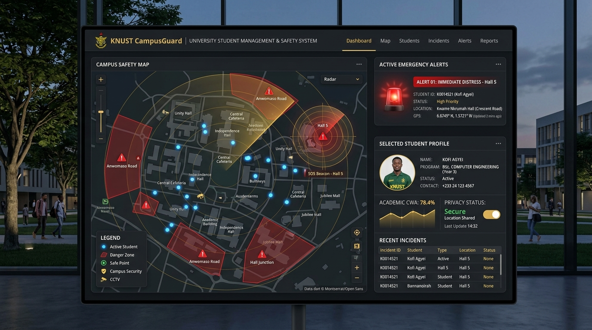
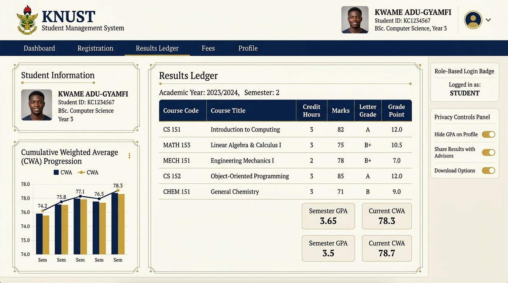

KNUST Registry · Intern Project Guide
The Complete New Features & Thursday Presentation Plan
A simple, plain-English handbook for Mary Maame Acheampong to understand the new features, answer Judge Davida’s questions with confidence, and deliver a standout final presentation.
💡 Key Principle to Remember:
The judges did not criticize you because you failed. They wanted to see if your system could solve real-world KNUST campus problems like off-campus safety, results, and privacy. You have now built those features. Go and show them with pride!
Author: Mary Maame Acheampong (Registry Intern)
Final Presentation Date: Thursday Evaluation Session
Project: KNUST Student Management System (SMS) & CampusGuard OS
Local App URL: http://localhost:3000
1. What Happened on Friday & The Thursday Game Plan
During your presentation last Friday, the judges (particularly Judge Davida) were looking for enterprise-level thinking. A simple form that adds names and student IDs looks like a basic school exercise. They challenged you with 5 specific real-world needs:
What Judge Davida Said:
"She should add GIS to it where it can track students when they’re off campus, logins, add something that would know when a student is being murdered, link students to their results, and other privacy settings."
Instead of panicking, we turned this feedback into your biggest advantage. We added 5 high-impact modules into your project and created an intuitive 5-tab interface. When you present on Thursday, you can say:
"Last Friday, the panel challenged me to take this project from a basic registry ledger to a full campus management ecosystem. Over the weekend, I expanded our system to solve off-campus hostel safety, emergency distress detection, CWA transcript results, and data privacy. Let me show you how it works."
2. Features 1 & 2: Off-Campus Safety & Threat Detection
🗺️ Feature 1: GIS Off-Campus Student Locator
Spatial Intelligence
What it means in plain English: A live interactive map of KNUST and Kumasi showing where students live when they are off-campus (in Ayeduase, Kotei, Boadi, Kentinkrono, etc.).
Why it matters: Over 60% of KNUST students live outside campus in private hostels. The university administration often has no idea where students stay off-campus. This map groups students by hostel enclave and draws a 1.8 km circular safety perimeter around KNUST campus.
How to explain it: "Using Leaflet and OpenStreetMap, we created a GIS layer. When students register their hostel, they are automatically placed into residential clusters so security and registry staff can visualize off-campus student density."
🚨 Feature 2: Threat Detection & "Campus Guardian" SOS
Life Safety
What it means in plain English: A safety system that alerts campus security and parents if a student is attacked or in fatal danger off-campus.
How it solves the "student being murdered" question: A computer cannot magically predict a crime, but it can deploy two proven safety mechanisms:
- 1. Instant Panic SOS Beacon: With one click, the student broadcasts their exact GPS coordinates, battery percentage, and an audio distress alarm to campus security dispatch.
- 2. The "SafeWalk" Dead-Man’s Timer (Standout Feature!): When a student walks late at night from campus to Ayeduase or Kotei, they set a 15-minute countdown. If an attacker ambushes them and they cannot check in, the timer hits 00:00 and automatically triggers a Priority-1 red alert with their last known GPS breadcrumbs!
- 3. Coerced Duress PIN: If an attacker forces the student to cancel the timer, entering duress PIN 9999 pretends to close the app while silently alerting security dispatch!
3. Features 3, 4 & 5: Results, Logins & Privacy Controls
📊 Feature 3: Academic Results & KNUST CWA Engine
Official KNUST Scale
What it means in plain English: Direct connection between student records and their semester exam marks, automatically calculating their Cumulative Weighted Average (CWA).
Why it matters: KNUST does not use American 4.0 GPA; KNUST uses CWA out of 100%. Our engine multiplies course marks by credit hours, divides by total credits, and classifies the student's degree:
| CWA Range |
Official KNUST Degree Classification |
| 70.0% – 100% |
First Class Honours |
| 60.0% – 69.9% |
Second Class Honours (Upper Division) |
| 50.0% – 59.9% |
Second Class Honours (Lower Division) |
| 40.0% – 49.9% |
Pass |
| Below 40.0% |
Fail / Trail |
👤 Feature 4: Role-Based Logins (Who Sees What)
Security & RBAC
What it means in plain English: Registry staff, security officers, and students have different views and permissions:
- Registry Admin: Full CRUD rights to add, edit, and manage records and course grades.
- Campus Security Dispatch: Can see the GIS safety map, off-campus clusters, and active SOS alarms, but cannot view student exam grades.
- Student (Ama Serwaa): Can view their own bio-data and CWA transcript, set SafeWalk timers, and toggle their privacy preferences.
🛡️ Feature 5: Privacy Controls (Ghana Data Protection Act 2012)
Statutory Compliance
What it means in plain English: Safeguards that stop the system from invading students' privacy.
- Stealth Geolocation Mode: The university does not spy on students 24/7. High-accuracy GPS is locked during normal hours and only unlocked when an active SOS or SafeWalk session is running.
- 500m Coordinate Masking: Blurs the exact room number on general registry lookups to protect student safety.
- Access Audit Trail: Logs every time a staff member inspects student records, in compliance with Act 843 Section 28.
4. Visual Wireframes & Picture Frames (For Presentation Slides)

Figure 1: Architectural Wireframe of the CampusGuard GIS Map & Real-time SOS Dispatch Queue.

Figure 2: Official KNUST Academic Results Ledger with Course Breakdown, CWA Badge, and Privacy Controls.
5. The Database Schema Made Simple
If the judges ask about your database, here is how you explain the 5 relational tables in simple analogies:
| Table Name |
What It Stores (Analogy) |
Key Columns |
| students |
The main identity card of the student. |
student_id (PK), name, dob, age, email, course, level |
| hostels |
The map directory of living locations. |
name, zone (Ayeduase/Kotei), latitude, longitude, is_off_campus |
| emergency_alerts |
The police dispatch log of distress calls. |
student_id, alert_type, status, latitude, longitude, notes |
| courses & academic_results |
The report card linking courses to marks. |
student_id, course_code, credit_hours, mark, grade |
| privacy_settings |
The student's privacy padlock choices. |
student_id, stealth_mode, mask_exact_room, consent_given |
6. Step-by-Step Thursday Live Demo Script (2 Minutes)
Practice doing these 5 steps in your browser (http://localhost:3000). It takes under 2 minutes and will wow the judges:
1
Start on "📋 Registry Ledger":
Show the ledger table. Point out that each row includes their residential status (e.g. Ayeduase Off-Campus) and a "📊 Results" button.
2
Click "🗺️ Off-Campus GIS Map":
Show the Leaflet map. Say: "Here is our GIS map centered on KNUST. The green circle is the 1.8km campus boundary. Outside, blue markers show student hostel concentrations in Ayeduase (84 students), Kotei (48 students), and Boadi."
3
Click "🚨 Campus Guardian SOS" & Demonstrate SafeWalk:
Say: "To address how the system detects an attack: we implemented the SafeWalk dead-man check-in timer."
Click "Simulate Timeout Alert". The audio siren beeps, and the incident dispatch card appears.
Say: "If a student is ambushed and cannot check in, the timer hits zero and instantly triggers this Priority-1 red alert with coordinates and battery telemetry sent to Security!" Then click "Stand Down / Reset SOS".
4
Click "📊 Results & CWA Portal":
Show Ama Serwaa's transcript with courses (CS 151, MATH 153). Point to the gold badge: "Here is our real-time KNUST CWA calculator showing 78.4% — First Class Honours."
5
Click "🛡️ Privacy & Compliance":
Show the Stealth Mode toggle and the Ghana Data Protection Act audit table. Say: "We respect statutory student privacy; geolocation is locked unless an emergency is triggered."
7. Word-for-Word Answers to Judges’ Questions
Memorize these key points. If Judge Davida or another panelist asks, smile, take a breath, and deliver these concise answers:
Judge: "How does the system know when a student is off campus?"
"We integrated an interactive GIS map using Leaflet and OpenStreetMap. KNUST has a defined 1.8-kilometer boundary. When students register their residence in off-campus hubs like Ayeduase or Kotei, the system flags their profile as 'Off-Campus' and places them in residential clusters for safety patrols."
Judge: "How does it know when a student is being murdered or attacked?"
"A computer cannot predict a crime with a sensor, but it can use proactive fail-safe systems. We built two mechanisms: first, an instant one-touch Panic SOS Beacon. Second, our standout feature: the 'SafeWalk' Dead-Man's Timer. When walking late at night along high-risk routes, the student starts a transit countdown. If they are attacked or incapacitated, they cannot check in; once the timer hits zero, the system automatically triggers a Priority-1 emergency alarm with their last known GPS coordinates."
Judge: "Doesn’t tracking students violate their privacy?"
"We designed our architecture strictly around the Ghana Data Protection Act, 2012 (Act 843). We use Stealth Geolocation Mode: student coordinates are never broadcast during peacetime. GPS tracking is unlocked exclusively during an active SOS beacon or user-initiated SafeWalk countdown."
Judge: "How do you calculate results and CWA?"
"KNUST uses Cumulative Weighted Average (CWA) on a 100-point scale, not a 4.0 GPA. We multiply each course exam mark by its credit hours, divide by total credit hours taken, and automatically classify degree honors such as First Class for 70% and above."
8. Thursday Morning Checklist
- Open terminal, run npm start and check that the server says "up and running on port 3000".
- Open http://localhost:3000 in Chrome or Edge and zoom browser to 110% (Ctrl and +) so judges can read clearly.
- Click through all 5 tabs once before you present to make sure everything is cached.
- Keep your volume audible so the judges hear the emergency alarm beep when you click "Simulate Timeout Alert".
- Take a deep breath and smile. You built real-world solutions to their exact feedback. You are ready!